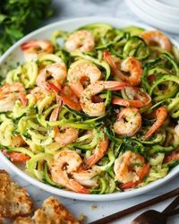
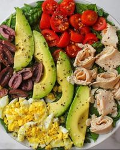
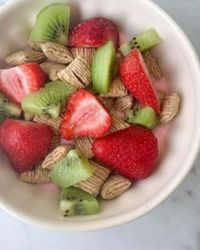

Superávit calórico
El superávit calórico es uno de los ingredientes necesarios para aumentar la masa muscular, junto con el entrenamiento adecuado y la recuperación necesaria. Si no comes lo suficiente, el cuerpo no tendrá la materia prima para construir más músculo.

Mantenimiento calórico
Un mantenimiento calórico es la forma de calcular las calorías que tu cuerpo necesita para mantener tu estado físico actual, es la base para crear un déficit o un superávit calórico.

Déficit calórico
Es cuando el cuerpo quema más calorías de la que has ingerido. Te podrás someter a él más o menos tiempo dependiendo de la cantidad de peso que quieras perder. Si es una persona con sobrepeso deberá mantenerlo más tiempo para quitarse esos kilos que le sobran.
¡Recuerde: todo es cuestión de equilibrio!